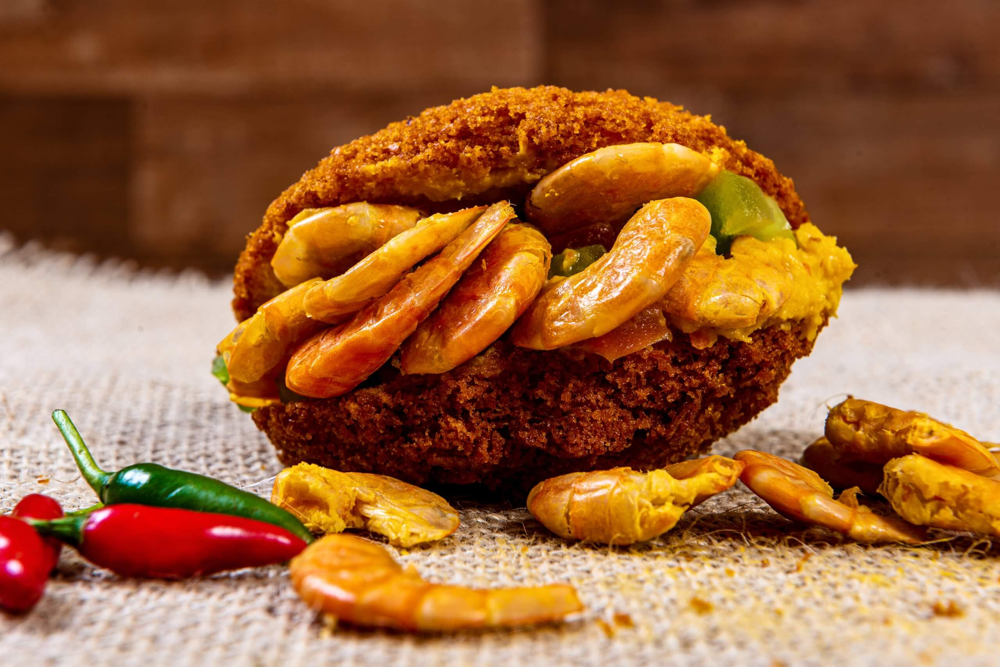

Vatapá
Image

INGREDIENTS
- 500 g of raw black-eyed peas
- 500 g of onion
- salt to taste
- 1 small onion with skin
- 500 ml of oil
- 500 ml palm oil
- 2 cups of vatapá tea
- 150 g dried shrimp
HOW TO DO
- Place the whole beans in a food processor and pulse for a few seconds to break up the beans.
- Place the beans in a container and cover with water.
- Soak for at least 12 hours.
- Shake the beans with a spoon and use a sieve to remove all the husks that come off the beans.
- After removing the skins a lot, wash the beans under running water and continue removing ?the little eye? and the rest of the shells.
- Remove as much as possible and reserve.
- Peel the onions, cut into pieces and reserve again.
- In a processor, place the beans and onions.
- Beat for 3 minutes, or until you get a smooth and uniform paste.
- Remove all the paste from the processor and place it inside a large, deep pan.
- With a wooden spoon, beat the acarajé mixture until the mixture triples in volume.
- This process is quite time consuming but is very important for fermentation.
- Place the oil, palm oil, and unpeeled onion in a medium saucepan and heat over high heat.
- With two tablespoons, shape the acarajés: fill one of the spoons with the dough, transfer from one spoon to the other until the dough is shaped like a dumpling.
- Place the dumplings in the very hot oil and fry for 3 minutes on one side.
- With a slotted spoon, flip the dumplings and fry until golden brown.
- Adjust the oil temperature.
- If necessary, lower the flame of the fire so that the oil does not burn.
- Remove the dumplings with a slotted spoon and place on absorbent paper.
- Cut the dumplings in half and fill with vatapá.
- Place the dried shrimp inside the acarajé and close.
Back